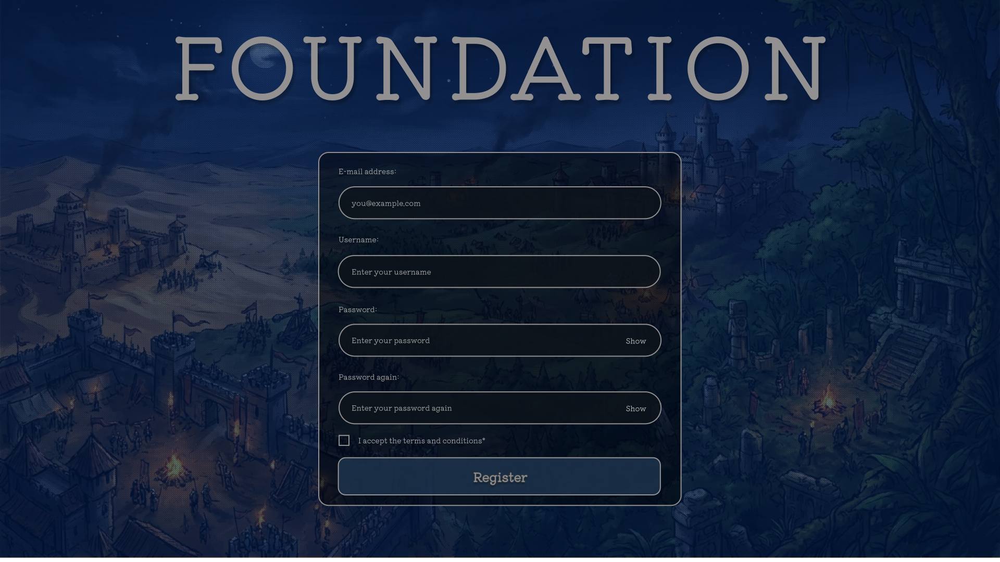
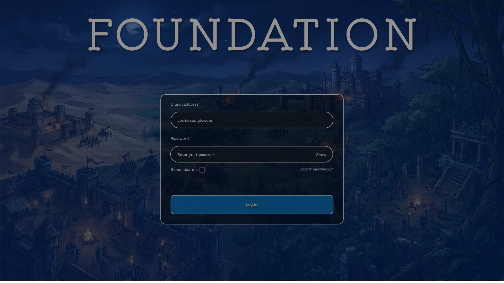
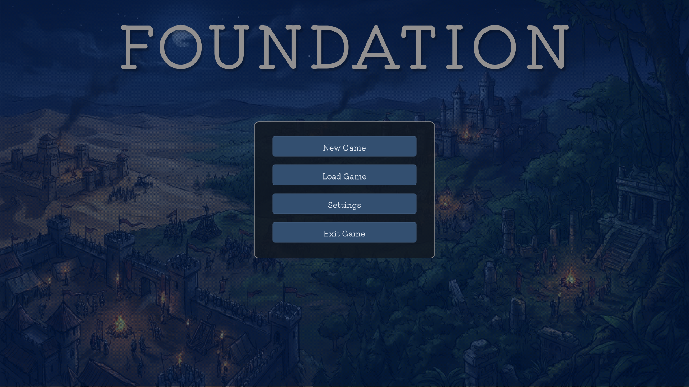
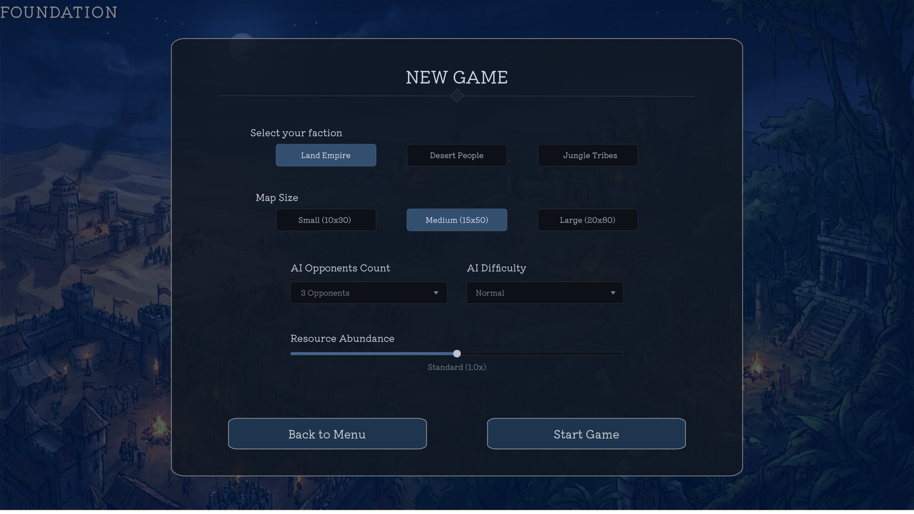
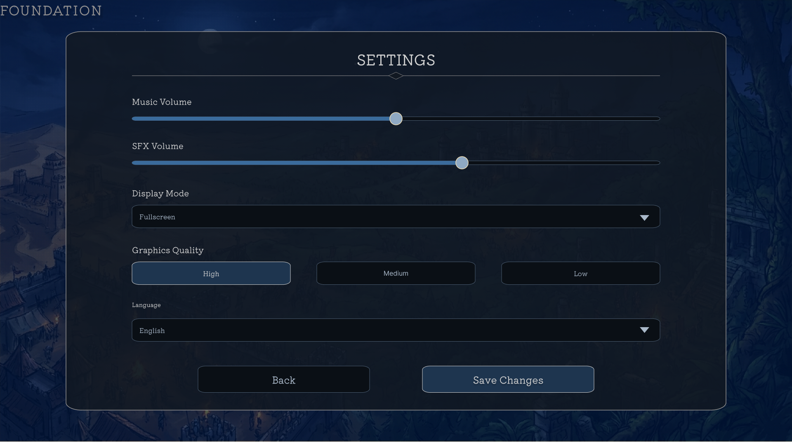
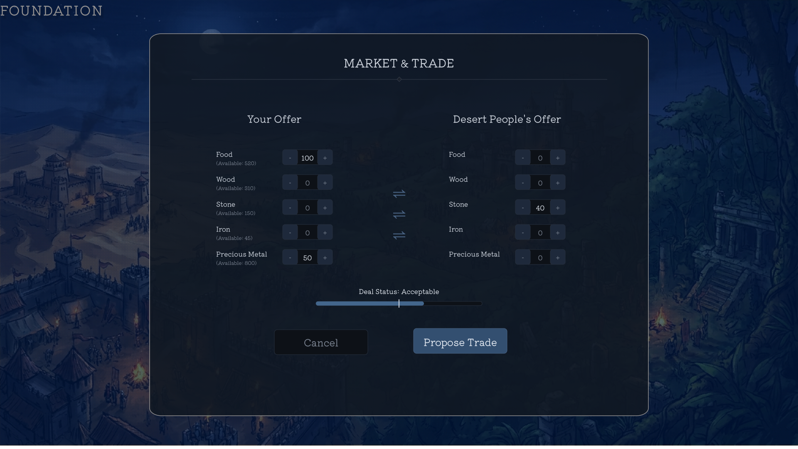
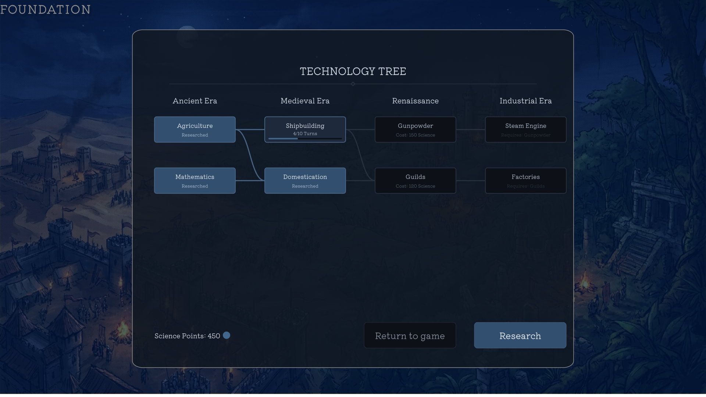

Csoport neve: CivTech
Feladat sorszáma: H3
Feladat címe: Foundation
Foundation
Gyakorlatvezető:
Mileff Péter
Csoport tagok:
| Várdai Balázs | GEBP | vardai.balazs22@gmail.com |
| Csobádi Bence | GEBP | csobadibence@gmail.com |
| Braun Milán | GEBP | braun2006milan@gmail.com |
| Kálmán Gábor József | G1BI | gaborkalman6@gmail.com |
2026.10.07
A documentumban részletesen, képek használatával bemutatujuk a Foundation alap játékmechanikáit.
A játék elindítása után a játékosnak fiókot kell létrehoznia, ha már van fiókja akkor csak be kell jelentkeznie.


A sikeres bejelentkezés után a Főmenü fogadja a játékost, ahonnan elérheti a legfontosabb funkciókat.

Új mérkőzés előtt a játékos kiválaszthatja a frakciót, a térkép méretét és az AI nehézségét.

A Settings menüben testreszabható a hangerő, a grafikai minőség és a nyelv.

A pályán található erőforrások:
A pályán 8 tipusú pálya elem található meg, ezek a pálya elemek különböző tulajdonsággal rendelkeznek és különböző erőforrásokat tartalmaznak:
Hegy: A hegy mellett lehet létrehozni kőbányákat, az építkezés szempontjából kulcsfontosságú, ezen kívűl az egységek nem tudnak a cellára lépni így stratégiai szempontból fontos lehet.
Mező: A mező az élelmiszer-termelés egyik legfontosabb helyszíne. Farmokat lehet rajta létrehozni, amelyek biztosítják a városok és a lakosság élelmiszer-ellátását.
Víz: Halászati épületek hozhatók létre mellette, amelyek élelmiszert biztosítanak. Bizonyos egységek számára természetes akadályt jelenthet.
Erdő: Az erdőből fa termelhető ki, amely az építkezések és különböző fejlesztések egyik alapvető nyersanyaga.
Dzsungel: Sűrű növényzete miatt az egységek mozgását akadályozhatja, ugyanakkor megfelelő helyzetben védelmet is biztosíthat.
Sivatag: Különleges ásványkincsek és ritka nyersanyagok lelőhelye lehet. Megfelelő fejlesztésekkel értékes gazdasági területté alakítható.
Tundra: Különleges nyersanyagok kitermelésére azonban alkalmas lehet, így megfelelő fejlesztésekkel gazdaságilag hasznosítható.
Jég: A pálya természetes határainak és az éghajlati viszonyoknak a kialakításában fontos szerepet tölt be.

Város alapadatai:
A város neve és tulajdonosa mellett látható a lakosság száma, a város szintje, valamint az aktuális termelési és élelmiszer-ellátási adatok.
Város fejlesztése:
A városok folyamatosan fejlődhetnek az általuk termelt és összegyűjtött erőforrások felhasználásával. A fejlesztések során új épületek hozhatók létre, növelhető a lakosság befogadóképessége, valamint javítható a város gazdasági és katonai teljesítménye.
A város fejlesztéséhez különböző erőforrásokra lehet szükség, például fára, kőre és élelmiszerre. Az építkezések egy bizonyos időt vesznek igénybe, amely alatt a város termelése folytatódik, de új fejlesztések indítása korlátozott lehet.
A városban egyszerre egy fő fejlesztés vagy építkezés lehet folyamatban. Az aktuális építkezés állapotát egy termelési csík jelzi.
Aktuális fejlesztés: Városháza
Szükséges: 100 fa, 80 kő
Hátralévő idő: 3 kör


Egységek részletei: A különböző egységek kijelölésével a jobb alsó részen megjelenik az egységek részletes tulajdonságai. Az egység tipusa a ⚔️ iconnal van jelezve, majd az egység neve és hogy kihez tartozik az egység, ezután a statisztikái láthatóak, a bal oldalon a sebzés látható és 30-40 életerőnyit fog sebezni, középen a védelmi erő azt jelzi hogy ha megtámadják mennyi sebzést fog szendvedni a támadó fél, job oldalt a mozgás az hogy hány cellát tud lépni. Legalul az egység életerejét mutatja számokban és egy életerő csíkkal amit be lehet álítani hogy mutassa a pályán is az egység fölött.
Red Empire
Támadáss íjjásszal: Amikor egy egységet kijelölünk a cella amin az egység található fehérrel kiemelődik. Az íjjász támadás kiválasztásával a lőtávolságot fehér határral van jelölve és a lőtávon belül lévő ellenséges egységek pirossal kiemelődnek.

A Piac ablakban a játékos nyersanyagokat cserélhet az ellenfelekkel. A rendszer mutatja az AI hajlandóságát az üzletre, így könnyen optimalizálható a hiányzó nyersanyagok beszerzése.

A játékos a megszerzett tudománypontokból új épületeket, katonai egységeket és bónuszokat fejleszthet ki, így folyamatosan fejlődhet és erősödhet a játékmenet során.

A Foundation játékban a játékosok három eltérő stratégiával és feltételrendszerrel is megnyerhetik a mérkőzést, így biztosítva a változatos játékélményt és az újrajátszhatóságot.
Katonai Győzelem: A katonai győzelem eléréséhez a játékosnak le kell igáznia a pályán lévő összes többi civilizációt. Ez akkor teljesül, ha a játékos elfoglalja vagy elpusztítja az összes ellenfél kezdővárosát (fővárosát). Ez a stratégia agresszív terjeszkedést, erős hadsereget és folyamatos harcot igényel.
Technológiai Győzelem: A technológiai győzelem a tudományos fejlődésre fókuszál. A játékosnak végig kell haladnia a fejlesztési fán, és elsőként kell kikutatnia a legutolsó technológiai korszak csúcsfejlesztését, majd megépítenie egy űrrakétát. Ez a megközelítés a békés építkezést, a kutatást elősegítő épületek maximalizálását és a hatékony nyersanyag-felhasználást igényli.
Gazdasági Győzelem: A gazdasági győzelem eléréséhez a játékosnak hatalmas vagyonra kell szert tennie, és gazdaságilag kell kiszorítania a többieket. Ennek a feltétele egy előre meghatározott mennyiségű arany vagy bármely fő nyersanyag összegyűjtése és egy globális csoda (pl. Világbank) felépítése. Ez a stratégia a kereskedelemre, az optimális városelhelyezésre és a védelmi stratégiákra épít.